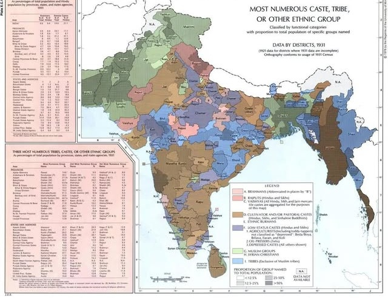
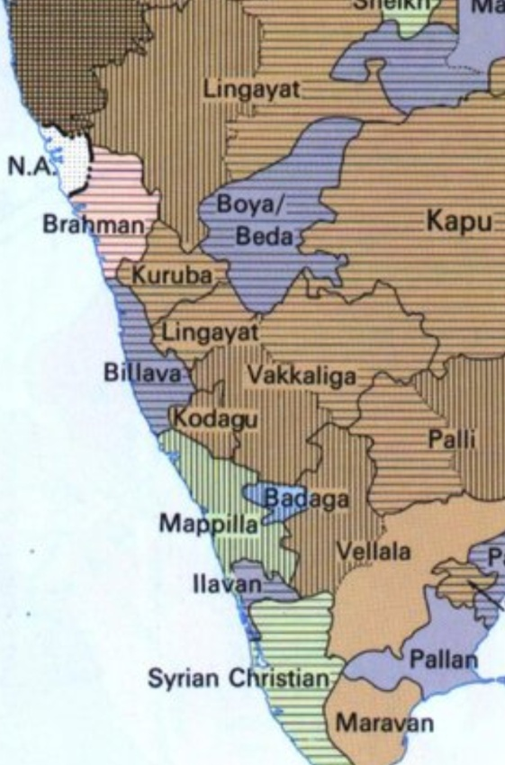

For decades, skeptics of the Tulu Nadu statehood movement have claimed that the geographical and social boundaries of our land are nothing more than modern imagination. However, modern historical reviews of colonial data tell a vastly different story. A closer look at the raw data collected during the 1931 Census of India under the British Raj reveals that colonial authorities officially mapped and recorded the undeniable demographic and territorial distinctiveness of Tulu Nadu, capturing the region precisely at the peak of its early struggle for autonomy.
While British administrative maps officially categorized the region as the South Canara District under the massive Madras Presidency, their localized demographic surveys told the real story. The 1930s marked a historic era where the demand for a separate Tulu Nadu Province was gaining ferocious momentum. It was a decade defined by cultural awakening, led by pioneering literary figures like Srinivas Upadhyaya Paniyadi, who fought tirelessly for the language and a separate state status. Against this backdrop of heightened political consciousness, the 1931 census became a vital tool of empirical proof for the movement.

Map A: Ethnological density lines across coastal regions.

Map B: Billava & indigenous community demographic concentration data.
Figure 1: Reconstructed demographic mappings from the 1931 Census of India, illustrating the distinct territorial separation from adjacent hinterlands.
The Billava Demographic Line
In the recently analyzed demographic mappings of the 1931 Census, a distinct territorial entity emerges precisely along the southwestern coast of India. The official census data confirmed that the Billava/Baida community—one of the largest, native, indigenous groups of the region—held a clear numerical dominance along this coastal belt.
By recording the overwhelming concentration of the Billava population alongside other unique regional communities like the Bunts, Mogaveeras, and Tulu Brahmins, the British effectively drew the ethnological boundaries of our homeland. The data proved to the colonial government what activists were already screaming on the streets: this specific coastal pocket possessed a social structure completely detached from the Kannada-dominated hinterlands to the east and the Malayalam-dominated regions to the south.
More Than Just Lines on a Map
Tulu scholars point out that the 1931 Census did not merely count heads; it documented a completely unique way of life that fueled the province movement. The colonial reports extensively noted the matrilineal traditions (Aliyasantana) and localized spiritual traditions (Daivaradhane) that were entirely exclusive to the Tulu-speaking population.
"What the 1931 official records prove is that Tulu Nadu has always been a cohesive, distinct cultural and demographic entity. The British administration may have managed it as a district for bureaucratic convenience, but their own data explicitly separated us from our neighbors based on our unique identity, validating the exact provincial demands being made by our leaders at the time."
The Struggle for Recognition Continues
As the modern debate over regional autonomy and the inclusion of the Tulu language into the Eighth Schedule of the Indian Constitution continues, the 1931 census stands as an unshakeable pillar of historical evidence. It serves as an official, empirical reminder that long before modern geopolitical lines were drawn, the distinctiveness of Tulu Nadu was an established political and social demand, backed by the British Raj's own official documentation.